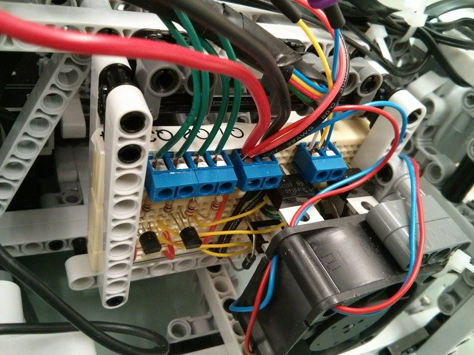
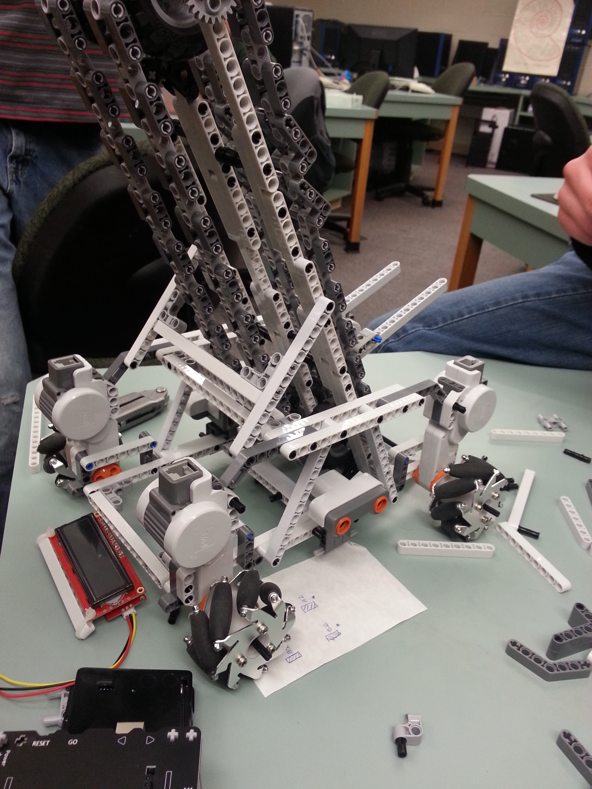

Apparently every year there's this Midwest Instruction and Computing (MICS) thing, and a part of this wonderful
event is a small robotics competition. The focus of this competition, much like many other robotics competitions,
is on accomplishing what is usually a novel task with an autonomous robot. Small teams from a variety of schools
participate.
At the 2014 conference the objective for the robotics competition was to score baskets with little foam nerf-like balls, on a
slanted playing field. The details of the challenge can be found in this pdf: http://micsymposium.org/mics2014/Robotics_Rules.pdf
The robots involved in this competition are relatively small and our school's team(s) tend to use Lego parts to build our robots, as we
lack the capacity to really manufacture any of our own structural components.
In 2014, our school had two teams participate in the robotics competition. One team used the Lego NXT brick, programmed in java, to control their robot while
the other team used an arduino instead. I was on the team using arduino. My primary responsibility on the team was electronics, which involved
finding various ways to control Lego NXT parts with an arduino.
Short summary of robot specs.
Drivetrain: 4 NXT motors with mecanum wheels.
Power: 5AA batteries
Control: Arduino Uno + NXShield-Dx
Sensors: 3 NXT ultrasonic sensors
Manipulator: Chain-elevator thing, 2 NXT motors with custom h-bridge.
Dawwwwwwww

A cobbled together h-bridge

During a redesign of the drivetrain
Drivetrain
For the drivetrain we decided to go with mecanum wheels. We figured that the horizontal movement would make searching for and collecting balls on the playing field
much easier. Another deciding factor was the fact that mecanum wheels are really cool.
Our need to control NXT parts with an arduino was mostly satisfied by an NXShield-Dx
which was a joy to use. The documentation is pretty good, and the provided libraries are relatively comprehensive and easy to work with.